|
I am a Research Engineer at Facebook AI Research (FAIR), where I work on computer vision and deep learning. I graduated with B.S. and M.S. degrees in Computer Science from Peking University in 2015 and 2018. |
{kind=link}
Publications |
2022 | |
| 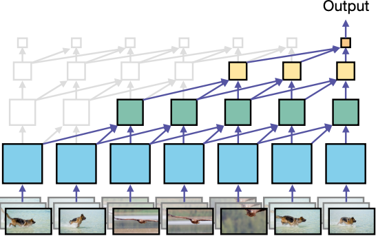 |
Chao-Yuan Wu*, Yanghao Li*, Karttikeya Mangalam, Haoqi Fan, Bo Xiong, Jitendra Malik, Christoph Feichtenhofer* arXiv, 2022 Paper |
2021 | |
| 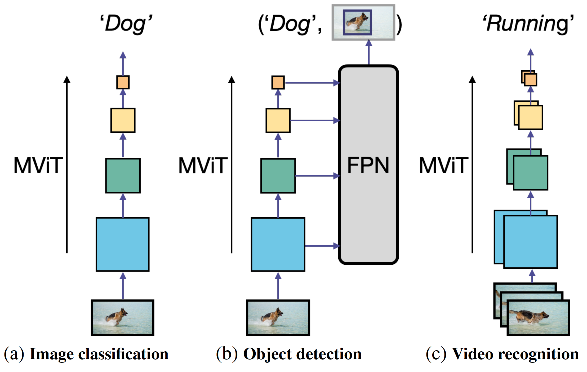 |
Yanghao Li*, Chao-Yuan Wu*, Haoqi Fan, Karttikeya Mangalam, Bo Xiong, Jitendra Malik, Christoph Feichtenhofer* arXiv, 2021 Paper |
| 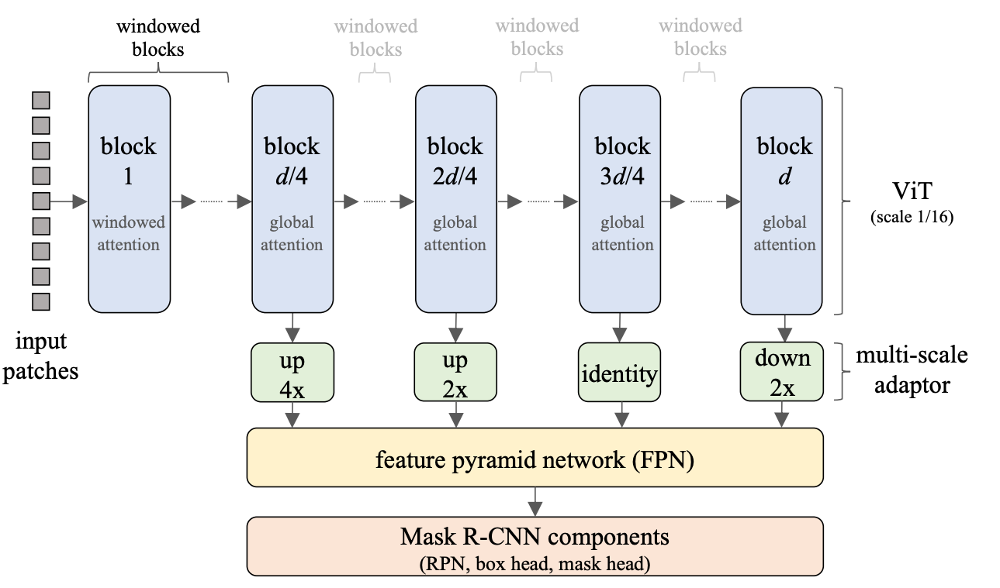 |
Yanghao Li, Saining Xie, Xinlei Chen, Piotr Dollár, Kaiming He, Ross Girshick arXiv, 2021 Paper |

|
Kaiming He, Xinlei Chen, Saining Xie, Yanghao Li, Piotr Dollár, Ross Girshick arXiv, 2021 Paper / Code |
| 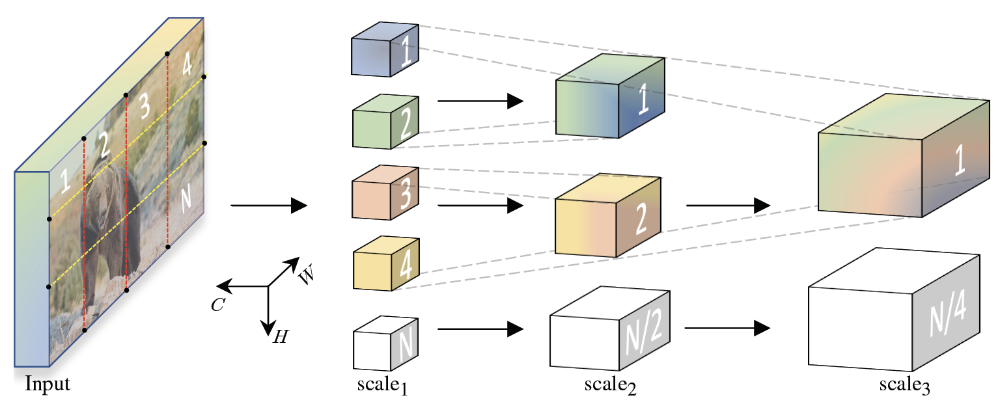 |
Haoqi Fan*, Bo Xiong*, Karttikeya Mangalam*, Yanghao Li*, Zhicheng Yan, Jitendra Malik, Christoph Feichtenhofer* ICCV, 2021 Paper / Code |
| 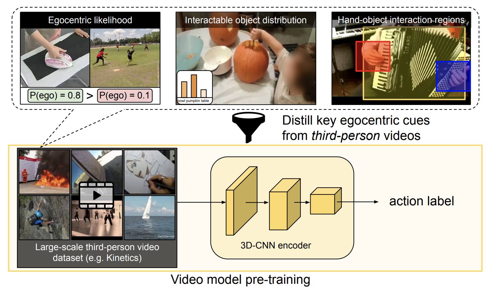 |
Yanghao Li, Tushar Nagarajan, Bo Xiong, Kristen Grauman CVPR, 2021 Paper / Code |

|
Kristen Grauman et al. arXiv, 2021 Paper / Website |
| 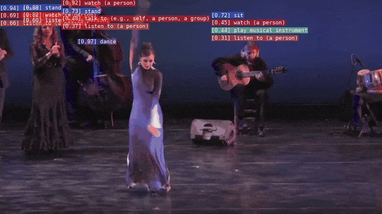 |
Haoqi Fan*, Tullie Murrell*, Heng Wang‡, Kalyan Vasudev Alwala‡, Yanghao Li‡, Yilei Li‡, Bo Xiong ‡, Nikhila Ravi, Meng Li, Haichuan Yang, Jitendra Malik, Ross Girshick, Matt Feiszli, Aaron Adcock†, Wan-Yen Lo†, Christoph Feichtenhofer† ACM MM, 2021 Paper / Code / Website |
Previous | |
| 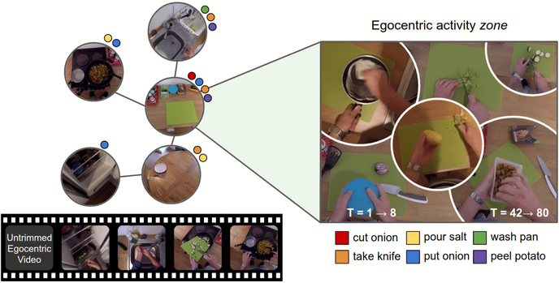 |
Tushar Nagarajan, Yanghao Li, Christoph Feichtenhofer, Kristen Grauman CVPR, 2020 Paper / Code / Website |
| 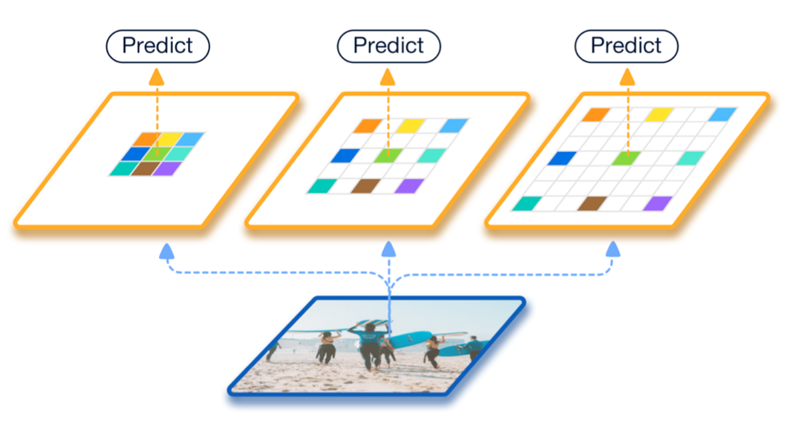 |
Yanghao Li*, Yuntao Chen*, Naiyan Wang, Zhaoxiang Zhang ICCV, 2019 Paper / MXNet Code / Detectron2 Code |
| 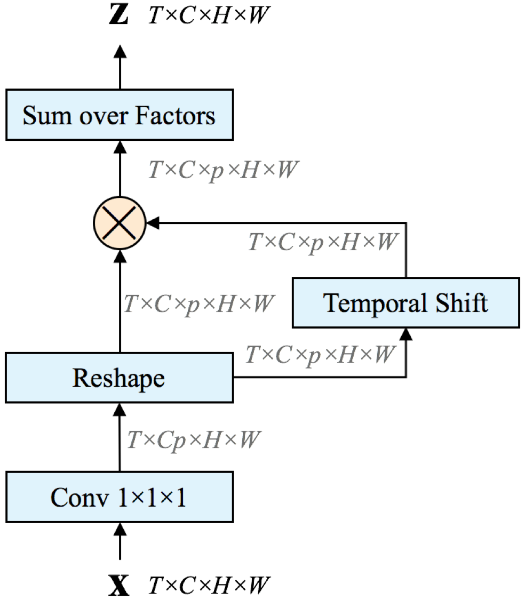 |
Yanghao Li, Sijie Song, Yuqi Li, Jiaying Liu AAAI, 2019 Paper |
| 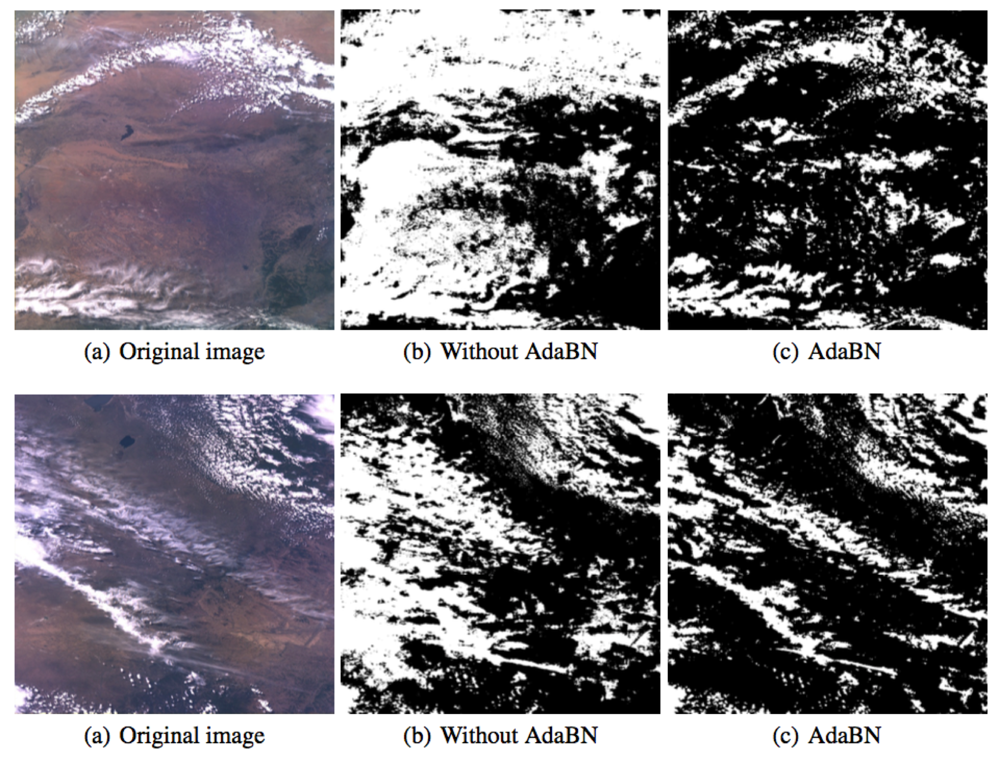 |
Yanghao Li, Naiyan Wang, Jianping Shi, Xiaodi Hou, and Jiaying Liu PR, 2018 Paper / ICLR workshop / Webpage |
| 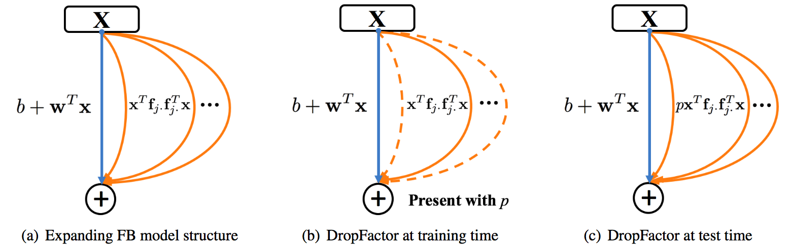 |
Yanghao Li, Naiyan Wang, Jiaying Liu, Xiaodi Hou ICCV, 2017 Paper / Code |
| 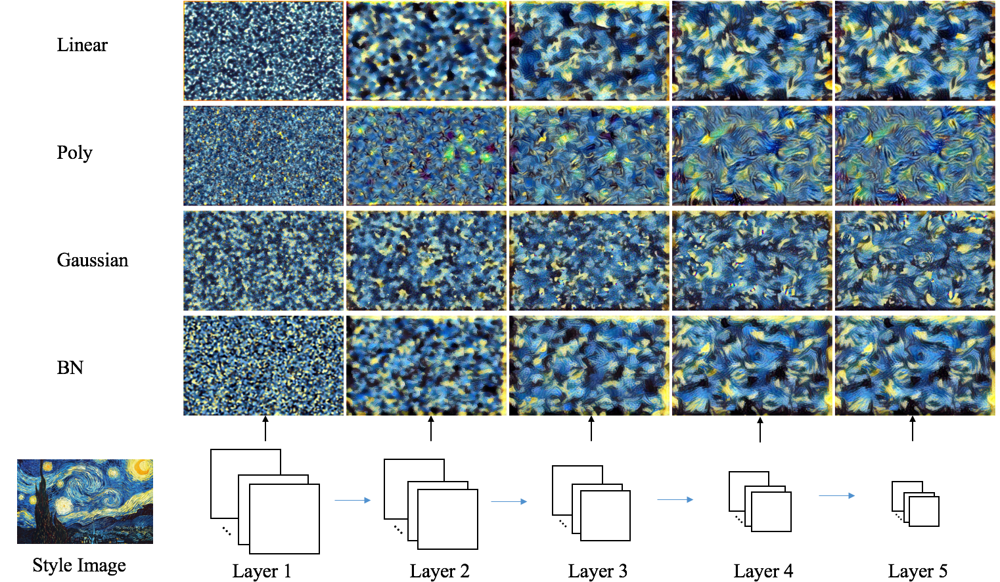 |
Yanghao Li, Naiyan Wang, Jiaying Liu, Xiaodi Hou ICCV, 2017 Paper / Code |
| 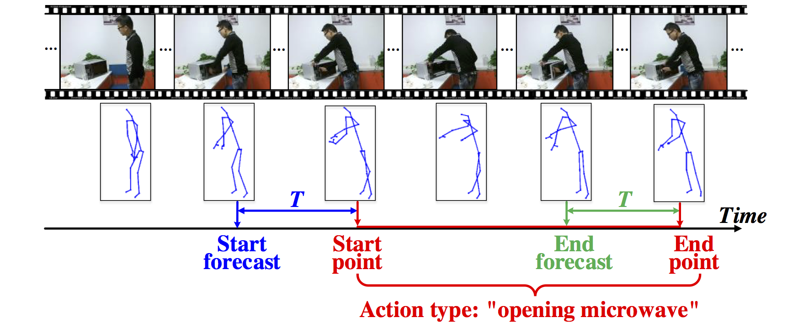 |
Yanghao Li, Cuiling Lan, Junliang Xing, Wenjun Zeng, Chunfeng Yuan, Jiaying Liu ECCV, 2016 Paper / Website |
Opensource Projects |

|
Haoqi Fan, Yanghao Li, Wan-Yen Lo, Christoph Feichtenhofer 
|
|
Haoqi Fan*, Tullie Murrell*, Heng Wang‡, Kalyan Vasudev Alwala‡, Yanghao Li‡, Yilei Li‡, Bo Xiong ‡, Nikhila Ravi, Meng Li, Haichuan Yang, Jitendra Malik, Ross Girshick, Matt Feiszli, Aaron Adcock†, Wan-Yen Lo†, Christoph Feichtenhofer† 
Paper / Post |
|
| 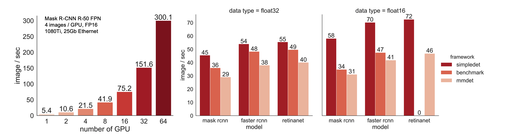 |
Yuntao Chen, Chenxia Han, Yanghao Li, Zehao Huang, Yi Jiang, Naiyan Wang, Zhaoxiang Zhang JMLR, 2019 
Paper |
|
Last update: Mar. 2022 Template |